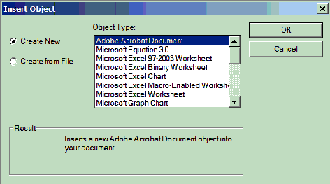
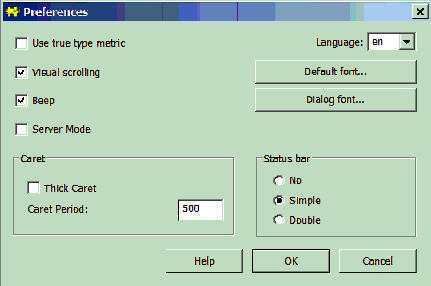

Edit Menu
General properties
The commands in this menu apply to the editing of documents. BUGS is build using a component framework. One component of this framework is a powerful document editor.
Undo
This command un-does the last editing action carried out by the user. The full name of this command changes depending on what type of editing action is to be un-done.
Redo
This command restores the last editing action carried out by the user if it has been undone. The full name of this command changes depending on what type of editing action is to be re-done.
Cut
This command cuts the highlighted section of the document to the Windows clip board.
Copy
This command copies the highlighted section of the document to the Windows clip board.
Paste
This command copies the contents of the clip board to the caret position in the document.
Delete
This command deletes the highlighted section from the document.
Paste Object
This command copies the contents of the clip board to the caret position in the document.
Paste Special...
This command copies the contents of the clip board to the caret position in the document. But in addition it allows the user to choose the format in which the object is copied into the document.
Paste to Window
This command copies the contents of the clip board to a new window.
Insert Object...
This command inserts an OLE object at the current caret position. A modal dialog box pops up giving a choice of OLE objects to insert

Object Properties...
This command allows the user to change the font and font style, size, color and effects.
Bitmap Image Object
This command allows the user to open or edit an in-line bitmap image.
Select Document
This command selects the document in the window.
Select All
This command selects the contents of the entire document.
Select Next Object
This command selects the next object, if one is currently selected; otherwise selects the first object in the document.
Preferences
This command opens a dialog that allows the user to set certain preferences for documents. In addition there is an option that affects the status bar, the line of information at the bottom of the main BUGS window. By default (option Simple) this line just shows error messages, but it can be hidden (option No) or made to show how much memory BUGS is using (option Double). Ticking the thick caret box can make the caret easier to see.
